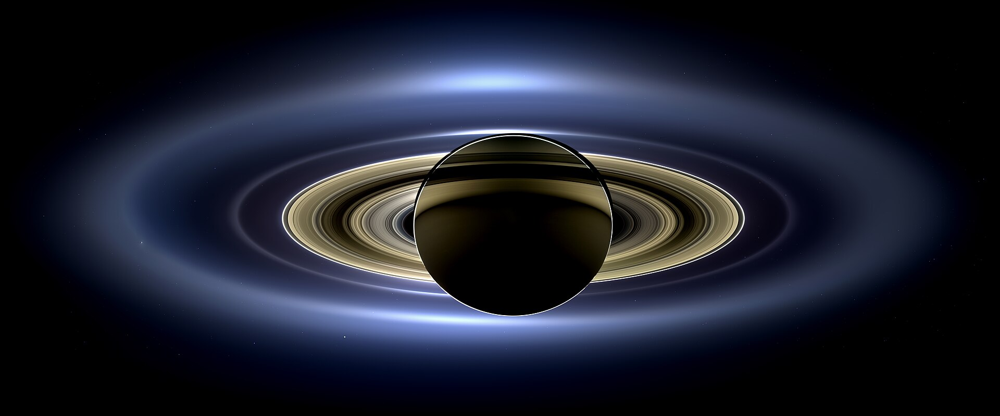
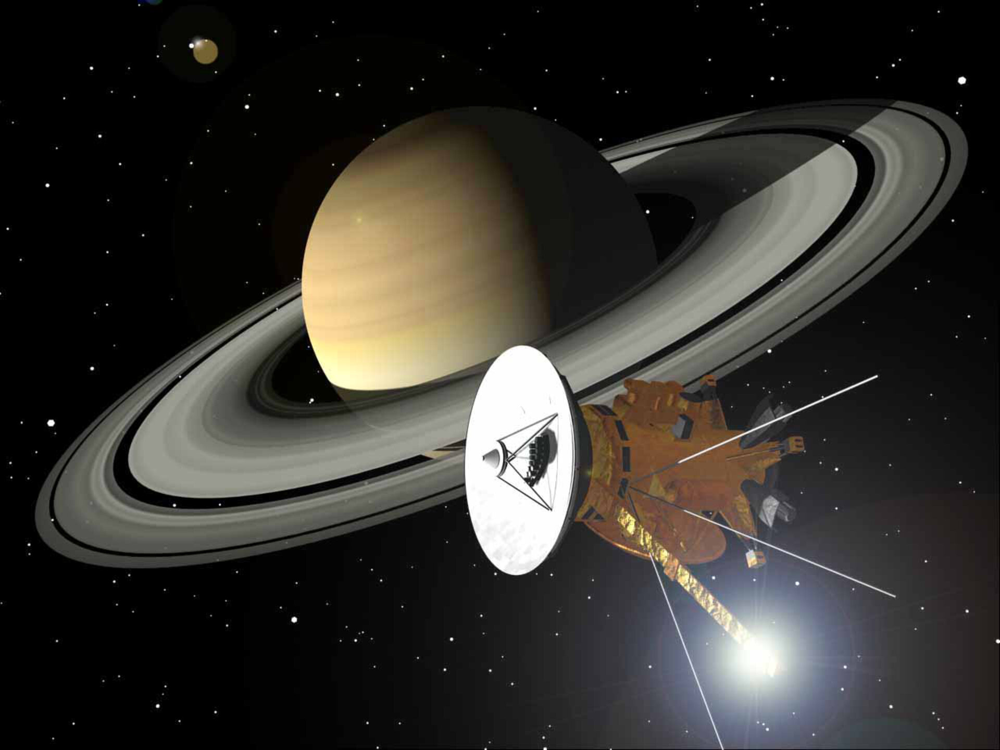

Saturn is the second-largest planet in the Solar System and is renowned for its magnificent ring system. This gas giant is composed mainly of hydrogen and helium and is surrounded by thousands of icy ring particles along with an extraordinary collection of moons, including Titan and Enceladus. Saturn remains one of the most beautiful and scientifically important worlds explored by humanity.
Saturn is the second-largest planet in the Solar System, exceeded only by Jupiter.
Gravity
10.44 m/s²
Despite its enormous size, Saturn's surface gravity is only slightly stronger than Earth's.
Length of Year
29.45 Years
Saturn requires nearly thirty Earth years to complete one orbit around the Sun.
Known Moons
146+
Saturn possesses the largest confirmed moon system in the Solar System, including Titan and Enceladus.
Saturn Overview
Saturn is the sixth planet from the Sun and the second-largest planet in the Solar System. Classified as a gas giant, Saturn is composed primarily of hydrogen and helium and is famous for its spectacular ring system. Formed approximately 4.5 billion years ago, Saturn has become one of the most scientifically important planets because of its rings, complex atmosphere, and remarkable collection of moons.
Planet Classification
Planet Type — Gas Giant
Solar System Order — 6th Planet
Average Distance — 1.43 Billion km
Orbital Period — 29.45 Earth Years
Rotation Period — 10h 33m
Average Orbital Speed — 9.68 km/s
Axial Tilt — 26.7°
Physical Characteristics
Diameter — 120,536 km
Radius — 58,232 km
Mass — 5.68 × 10²⁶ kg
Density — 0.687 g/cm³
Surface Gravity — 10.44 m/s²
Escape Velocity — 35.5 km/s
Known Moons — 146+
Environment
Atmosphere — Hydrogen & Helium
Cloud Temperature — ≈ -178°C
Ring System — Largest in Solar System
Magnetic Field — Extremely Powerful
Average Wind Speed — 1,800 km/h
Surface — No Solid Surface
Interior — Metallic Hydrogen
Saturn's Ring System
Saturn possesses the most spectacular ring system in the Solar System. Although they appear solid from a distance, the rings are actually made of billions of particles of ice, rock, and dust ranging in size from tiny grains to mountain-sized chunks. The rings extend hundreds of thousands of kilometers from Saturn but are surprisingly thin.
Ring Diameter
282,000 km
The main rings stretch nearly 282,000 kilometers across.
Ring Thickness
10–100 m
Despite their enormous width, most rings are only a few tens of meters thick.
Main Rings
7
Astronomers identify seven major rings labeled A through G.
Composition
Ice
More than 95% of the ring material consists of water ice.
Atmosphere & Weather
Saturn's atmosphere consists mainly of hydrogen and helium with traces of methane, ammonia, and water vapor. The planet experiences extremely powerful winds, massive storms, and seasonal changes caused by its tilted rotational axis.
Hydrogen
Hydrogen makes up approximately 96% of Saturn's atmosphere.
Helium
Helium is the second most abundant atmospheric gas.
Storm Systems
Saturn occasionally develops giant storms that can wrap around the entire planet.
Magnetic Field
Saturn generates a powerful magnetic field through the motion of electrically conducting metallic hydrogen deep inside the planet. Although weaker than Jupiter's, Saturn's magnetosphere extends millions of kilometers into space and interacts with the solar wind and its moons.
Magnetosphere
Millions km
Saturn's magnetic influence stretches far beyond its rings.
Auroras
Polar
Colorful auroras occur near Saturn's poles.
Radiation
Strong
Charged particles become trapped inside Saturn's magnetic field.
Source
Metallic Hydrogen
Electrical currents inside metallic hydrogen generate Saturn's magnetic field.
Interior Structure
Scientists believe Saturn contains a dense rocky core surrounded by layers of metallic hydrogen, liquid hydrogen, and gaseous hydrogen. Extreme pressure and temperature increase rapidly toward the planet's center, creating one of the most unusual environments in the Solar System.
Rocky Core
A compact core likely composed of rock, metal, and ice.
Metallic Hydrogen
Hydrogen behaves like an electrically conducting metal deep inside Saturn.
Outer Atmosphere
The visible atmosphere gradually blends into deeper layers without a solid boundary.
Saturn's Major Moons
Saturn possesses the largest known moon system in the Solar System. Its diverse moons range from heavily cratered icy worlds to planets with thick atmospheres and even hidden oceans. These moons have become some of the most exciting destinations for future planetary exploration.
🌎 Titan
Titan is Saturn's largest moon and the second-largest moon in the Solar System. It possesses a thick nitrogen atmosphere, rivers, lakes, and seas of liquid methane and ethane, making it one of the most Earth-like worlds beyond Earth.
❄ Enceladus
Enceladus is famous for enormous geysers that eject water vapor, ice particles, and organic compounds into space. Beneath its icy crust lies a global ocean that may provide conditions suitable for life.
🌑 Rhea
Rhea is Saturn's second-largest moon. Its heavily cratered icy surface preserves billions of years of Solar System history and may even possess a very thin ring system.
🌍 Dione
Dione is covered with bright ice cliffs and fractured terrain, indicating past geological activity. Scientists suspect that a subsurface ocean may exist deep beneath its icy crust.
⚪ Iapetus
Iapetus is famous for its dramatic two-tone appearance. One hemisphere is extremely dark while the opposite side is bright with reflective ice.
🧀 Mimas
Mimas is recognizable because of its enormous Herschel Crater, giving it an appearance similar to the fictional "Death Star."
Cassini–Huygens Mission
The Cassini-Huygens mission remains one of the greatest achievements in planetary exploration. Launched in 1997, Cassini entered orbit around Saturn in 2004 and spent over 13 years studying the planet, its rings, magnetic field, and numerous moons before ending its mission with the spectacular Grand Finale in 2017.
Launch
October 15, 1997
Saturn Arrival
July 1, 2004
Mission End
September 15, 2017
Historic Achievement
Delivered the Huygens probe to Titan, the first landing ever accomplished in the outer Solar System.
Saturn Exploration Timeline
1610
Galileo Galilei first observed Saturn through a telescope, although he could not identify its rings.
1655
Christiaan Huygens correctly identified Saturn's rings and discovered Titan.
1979–1981
Pioneer 11 and Voyager 1 & 2 revealed the complexity of Saturn's rings and moons.
2004
Cassini entered orbit around Saturn and began detailed exploration.
2005
The Huygens probe successfully landed on Titan.
2017
Cassini completed its Grand Finale by diving into Saturn's atmosphere.
Amazing Saturn Facts
💍 Giant Rings
Saturn's rings extend hundreds of thousands of kilometers but are only tens of meters thick.
🌊 Float on Water
Saturn's average density is lower than water, meaning it would theoretically float in an enormous ocean.
🌎 Titan
Titan is the only moon in the Solar System with a dense atmosphere.
❄ Hidden Ocean
Enceladus contains a global subsurface ocean beneath its icy shell.
🌪 Powerful Winds
Wind speeds near Saturn's equator can exceed 1,800 km/h.
⬡ Hexagon Storm
A mysterious six-sided jet stream surrounds Saturn's north pole and has persisted for decades.
Scientific Importance
Saturn provides scientists with a unique laboratory for studying giant planet formation, ring dynamics, atmospheric circulation, and icy moon evolution. The Cassini mission transformed our understanding of Saturn's complex system, revealing active geysers on Enceladus, methane lakes on Titan, intricate ring structures, and interactions between the planet, its moons, and its magnetic field. Future missions will continue exploring Saturn's moons as promising locations in the search for environments capable of supporting life.
Saturn: The Jewel of the Solar System
Saturn has fascinated humanity for centuries because of its magnificent rings and graceful appearance. Although Jupiter is larger, Saturn's brilliant ring system makes it the most visually recognizable planet in the Solar System. Modern spacecraft have transformed Saturn from a distant yellow world into one of the richest scientific laboratories for understanding planetary systems.
Saturn is primarily composed of hydrogen and helium. Unlike Earth, it has no solid surface. As a spacecraft descends, the atmosphere gradually becomes denser until gases transition into liquid hydrogen and metallic hydrogen under enormous pressure. Scientists believe a dense rocky core lies deep beneath these layers.
Its spectacular ring system consists of billions of particles made mostly of water ice mixed with rock and dust. Some particles are microscopic, while others are as large as mountains. Gravitational interactions with Saturn's moons continuously shape the rings into narrow gaps, waves, and intricate patterns.
The discoveries made by the Cassini-Huygens mission completely changed our understanding of Saturn. Scientists discovered active geysers on Enceladus, methane lakes on Titan, new moons, dynamic weather systems, and detailed structures within the rings. These discoveries continue to guide future planetary exploration and the search for life beyond Earth.
Saturn Gallery
Representative scientific imagery showing Saturn and its remarkable planetary system.
Global View
A full-disk image highlighting Saturn's atmosphere and ring system.

Ring System
The spectacular rings consist primarily of billions of icy particles.

Cassini Mission
Cassini revolutionized our understanding of Saturn and its moons.
Frequently Asked Questions
Why is Saturn famous?
Saturn is famous for its spectacular ring system, which is the largest and brightest in the Solar System.
Can Saturn float on water?
Yes. Saturn's average density is lower than water, meaning it would theoretically float in a sufficiently large ocean.
What are Saturn's rings made of?
They are composed mainly of water ice mixed with rock and dust particles.
Which is Saturn's largest moon?
Titan is Saturn's largest moon and possesses a dense nitrogen-rich atmosphere.
Does Saturn have storms?
Yes. Saturn experiences giant storms, extremely fast winds, and the famous hexagonal storm at its north pole.
Why is Enceladus important?
Enceladus contains a global subsurface ocean and water-rich geysers, making it one of the most promising places to search for extraterrestrial life.